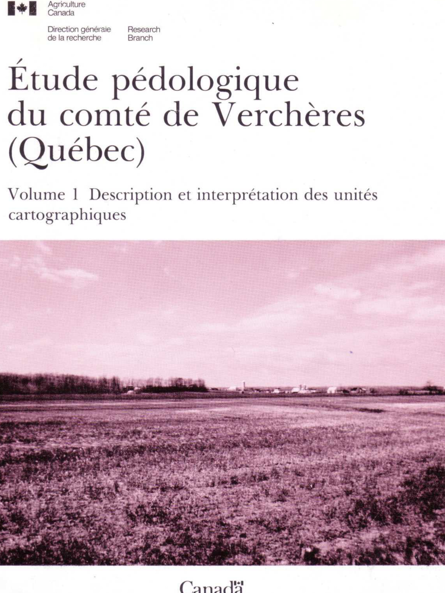
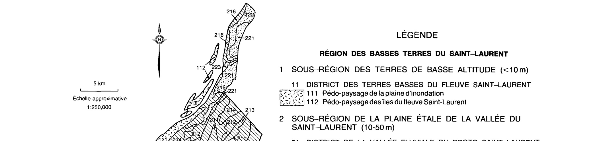

Identification & Caractéristiques Générales
Les sols de la série de Verchères se sont développés dans la plaine étale de la vallée du Saint-Laurent, plus précisément dans le district des replats argileux et des zones post-champlainiennes. Ils occupent des positions topographiques dépressionnaires, notamment des marécages de bordure ou en bassin, caractérisés par des pentes faibles variant de 0 à 2 %. Le profil pédologique est caractérisé par un dépôt organique de surface, constitué d'une épaisseur variable (allant de 25 à 120 cm) de tourbe forestière fortement décomposée (Oh), reposant sur un substratum minéral argileux d'origine sédimentaire. Ce matériau sous-jacent, mis en place dans les bassins de sédimentation post-glaciaires, est constitué d'argile lourde ou d'argile limoneuse de couleur gris verdâtre, parfois calcaire en profondeur.
Morphologiquement, ces sols profonds présentent un régime hydrique très mal drainé, avec des manifestations de gley observées dès la surface. L'épaisseur totale du solum varie de 40 à 140 cm. Les couches organiques supérieures, d'une épaisseur globale pouvant atteindre plus de 60 cm dans les profils types, montrent une réaction variant de fortement à moyennement acide en surface, pour devenir faiblement acide à neutre dans les horizons organiques inférieurs. Le contenu en fragments grossiers y est faible, constitué de 0 à 10 % de débris de bois partiellement décomposés. Le substratum minéral (horizon IICg) présente une structure massive, une consistance ferme à très collante à l'état trempé, et une réaction neutre à modérément alcaline. La profondeur d'apparition des carbonates excède généralement 120 cm, bien qu'elle puisse localement débuter à 90 cm, et une fine couche de marne peut parfois s'intercaler entre le dépôt organique et le substratum argileux.
Sur le plan agronomique, les sols de Verchères présentent des limitations sévères liées principalement à l'excès d'eau permanent et à la très faible portance inhérente à leur nature organique et au substratum argileux compact. À l'état naturel, ils supportent généralement un couvert forestier ou demeurent confinés aux milieux humides. Leur mise en valeur agricole requiert impérativement l'installation d'un réseau de drainage souterrain efficace et l'aménagement d'exutoires adéquats pour abaisser la nappe phréatique et permettre l'évacuation rapide des eaux printanières, ce sol étant sujet à des inondations saisonnières. Le travail du sol doit être géré avec précaution pour éviter la compaction et le mélange excessif des couches organiques avec l'argile lourde du sous-sol. En raison de l'acidité des horizons de surface, des apports calcaires localisés sont souvent nécessaires pour optimiser le pH en vue d'éventuelles cultures, bien que l'utilisation de ces sols demeure fortement restreinte par leurs contraintes hydriques et physiques.
Caractères Distinctifs & Morphologie Génétique (Comté de Chambly — Page 9)
- Le système canadien comporte cinq catégories. Les catégories supérieures ou de niveau de généralisation plus élevé sont celles qui comprennent le plus grand nombre de sols. Énumérées dans l'ordre décroissant de leur niveau de généralisation, ces catégories sont : l'ordre, le grand groupe, le sous-groupe, la famille et la série.
- Au niveau de l'ordre, les classes ou taxons sont basés sur les propriétés des sols reflétant la nature de l'environnement du sol et les effets des processus dominants de formation des sols. Le système canadien comporte neuf ordres que l'on désigne par les qualificatifs suivants : brunisolique, chernozémique, cryosolique, gleysolique, luvisolique, organique, podzolique, régosolique et solonetzique. Les sols du comté de Chambly appartiennent à quatre de ces ordres, c'est-à-dire à ceux des sols brunisoliqes, gleysoliques, organiques et podzoliques.
Classification Taxonomique & Environnement Pédologique
| Ordre Pédologique | Organique |
|---|---|
| Grand Groupe (SCSS) | Humisol terrique |
| Sous-Groupe Taxonomique | Humisol terrique |
| Famille Pédologique | Humique, ne s'applique pas, euique |
| Mode de Dépôt Parental | Marécage sur marin |
| Classe de Drainage Naturel | Très mal drainé |
| Régime Thermique & Humidité | Doux / Aquique |
Description Morphologique du Profil Type
Séquences génétiques des horizons pédologiques caractérisant le profil type représentatif de la série Verchères :
Profil forestier / boisé — Comté de Chambly
✓ Source : Comté de Chambly — Page 138Couleur Munsell : 10YR 2/2
Structure & Consistance : Granulaire
Description morphologique : Tourbe forestière, fortement décomposée (10 % de fibres frottées); brun très foncé (10YR 2/2); structure granulaire, fortement développée; consistance friable; limite nette, régulière; réaction fortement acide.
Couleur Munsell : 10YR 2/1
Structure & Consistance : Polyédrique à granulaire
Description morphologique : Tourbe forestière, fortement décomposée (10 % de fibres frottées); noire (10YR 2/1); massive; consistance très friable; limite abrupte, régulière; réaction moyennement acide.
Couleur Munsell : Non précisée
Structure & Consistance : Polyédrique subangulaire
Description morphologique : Argile lourde; gris olivâtre (5Y 4,5/2); marbrures brun jaunâtre foncé (1MYR 4/6), nombreuses, moyennes, marquÉes; structure polyédrique subangulaire, grossière, faiblement développée; consistance très collante; peu poreuse; limite graduelle, régulière; réaction faiblement alcaline.
Couleur Munsell : 5GY 4/1 (matrice), 10YR 4/6 (marbrures)
Structure & Consistance : Polyédrique à granulaire
Description morphologique : Argile lourde; gris verdâtre foncé (5GY 4/1); marbrures brun jaunâtre foncé (10YR 4/6), rares, fines, marquées; massive; consistance très collante; peu poreuse; effervescence modérée; réaction modérément alcaline.
Profil cultivé (agricole) — Comté de Saint-hyacinthe — Variante calcaire
✓ Source : Comté de Saint-hyacinthe — Page 23Couleur Munsell : 5Y 3/2
Structure & Consistance : Granulaire
Description morphologique : Loam sableux fin; brun grisâtre très foncé (2,5Y 3/2); structure granulaire, fine, peu développée; consistance très friable; très poreux; limite abrupte, régulière; réaction neutre.
Couleur Munsell : 5Y 4/2 (matrice), 10YR 5/6 (marbrures)
Structure & Consistance : Polyédrique à granulaire
Description morphologique : Sable loameux; brun grisâtre foncé (2,5Y 4/2); mouchetures brun jaunâtre (10YR 5/6), assez nombreuses, fines, très contrastées; particulaire; consistance meuble; très poreux; limite nette, régulière; réaction faiblement alcaline.
Couleur Munsell : 5Y 4/2 (matrice), 10YR 5/6 (marbrures)
Structure & Consistance : Polyédrique à granulaire
Description morphologique : Loam sablo-argileux; gris olivâtre (5Y 4/2); mouchetures brun jaunâtre (10YR 5/6), très nombreuses, moyennes, très contrastées; massif; consistance friable; peu poreux; limite nette, régulière; effervescence modérée; réaction faiblement alcaline.
Couleur Munsell : 5Y 5/3 (matrice), 10YR 5/6 (marbrures)
Structure & Consistance : Polyédrique
Description morphologique : Argile lourde; olive (5Y 5/3); mouchetures brun jaunâtre (10YR 5/6), très nombreuses, fines, très contrastées; massive se subdivisant en structure polyédrique, subangulaire, moyenne et grosse, peu développée; consistance assez collante; très poreuse; effervescence modérée; réaction modérément alcaline.
Profil cultivé (agricole) — Comté de Saint-hyacinthe
✓ Source : Comté de Saint-hyacinthe — Page 118Couleur Munsell : 10YR 2/2
Structure & Consistance : Granulaire
Description morphologique : Tourbe forestière, très décomposée; brun très foncé (10YR 2/2); structure granulaire, très développée; consistance friable; très poreuse; limite nette, régulière; réaction fortement acide.
Couleur Munsell : 10YR 2/1
Structure & Consistance : Polyédrique à granulaire
Description morphologique : Tourbe forestière, très décomposée; noir (10YR 2/1); massive; consistance très friable; peu poreuse; limite abrupte, régulière; réaction moyennement acide.
Couleur Munsell : 10YR 4/6
Structure & Consistance : Polyédrique subangulaire
Description morphologique : Argile lourde; gris olivâtre (5Y 4,5/2); mouchetures brun jaunâtre foncé (10YR 4/6), très nombreuses, moyennes, très contrastées; structure polyédrique subangulaire, grosse, peu développée; consistance très collante; peu poreuse; limite graduelle, régulière; réaction faiblement alcaline.
Couleur Munsell : 5GY 4/1 (matrice), 10YR 4/6 (marbrures)
Structure & Consistance : Polyédrique à granulaire
Description morphologique : Argile lourde; gris verdâtre foncé (5GY 4/1); mouchetures brun jaunâtre foncé (10YR 4/6), peu nombreuses, fines, très contrastées; massive; consistance très collante; peu poreuse; effervescence faible; réaction modérément alcaline.
Profil cultivé (agricole) — Comté de Verchères
✓ Source : Comté de Verchères — Page 125Couleur Munsell : 10YR 2/2
Structure & Consistance : Granulaire
Description morphologique : Tourbe forestière, très décomposée; brun très foncé (10YR 2/2); structure granulaire, très développée; consistance friable; très poreuse; limite nette, régulière; réaction fortement acide.
Couleur Munsell : 10YR 2/1
Structure & Consistance : Polyédrique à granulaire
Description morphologique : Tourbe forestière, très décomposée; noir (10YR 2/1); massive; consistance très friable; peu poreuse; limite abrupte, régulière; réaction moyennement acide.
Couleur Munsell : 10YR 4/6
Structure & Consistance : Polyédrique subangulaire grosse
Description morphologique : Argile lourde; gris olivâtre (5Y 4,5/2); mouchetures brun jaunâtre foncé (10YR 4/6), très nombreuses, moyennes, très contrastées; structure polyédrique subangulaire grosse, peu développée; consistance très collante; peu poreuse; limite graduelle, régulière; réaction faiblement alcaline.
Couleur Munsell : 5GY 4/1 (matrice), 10YR 4/6 (marbrures)
Structure & Consistance : Polyédrique à granulaire
Description morphologique : Argile lourde; gris verdâtre foncé (5GY 4/1); mouchetures brun jaunâtre foncé (10YR 4/6), peu nombreuses, fines, très contrastées; massive; consistance très collante; peu poreuse; effervescence faible; réaction faiblement alcaline.
Profils Photographiques & Planches de Terrain
Documents iconographiques, figures pédologiques et coupes de terrain documentées dans les mémoires d'inventaire pour de la série Verchères :


Propriétés Physico-Chimiques & Analyses de Laboratoire
| Col 1 | Col 2 | Col 3 | Col 4 | Col 5 | Col 6 | Col 7 | Col 8 | Col 9 | Col 10 | Col 11 |
|---|---|---|---|---|---|---|---|---|---|---|
| DF4 | 4WD | 54,2 | F | F | E | E | F | F | F | F |
| DJ3 | 3WD | 321,7 | M | F | M-E | E | F | F | F | F |
| DJ4 | 3WD | 723,6 | F-M | F | M-E | E | F | F | F | F |
| DJ4b | 3Wdt | 144,0 | F-M | F | M | E | F | F | F | F |
| DO80 | O4W'il | 371,7 | F | F | E | E | F | F | M-E | F-M |
| DT2gbp | 4FPmdt | 182,9 | M-E | M-E | M | F-M | F | M | F | M |
| DT3gbp | 4FPmdt | 56,2 | M-E | M | M | F-M | F | M | F | M |
| DT3gbqr | 6P'frmdt | 28,3 | M-E | M | M | F-M | F | M | F | M |
| DT3p | 4FPmd | 112,4 | M-E | M | M | F-M | F | M | F | M |
| FA3mbp | 6R'Pfmdt | 14,7 | M | M | M | F | F | M | M | M-E |
| FC2 | 3WF(m) | 295,8 | M-E | M | M | M-E | M | F | M | M |
| FC3 | 2WF(m) | 230,0 | M | M | M | M-E | M | F | M | M |
| FS1 | 4F'M | 91,4 | E | M-E | F | F | - | - | M | F-M |
| FS1b | 4F'Mt | 45,5 | E | M-E | F | F | - | - | M | F-M |
| FS2 | 3MF | 322,9 | M-E | M-E | F | F | - | - | M | F-M |
| FS2gbp | 4MFPt | 27,7 | M-E | M-E | F | F | - | - | M | F-M |
| GR3 | 3WD | 195,7 | F-M | F-M | E | E | F | F | F | M-E |
| GR3mp | 4WDrp | 26,9 | F-M | F-M | E | M | F | F | F | E |
| GR3p | 3WDp | 189,6 | F-M | F-M | E | E | F | F | F | M-E |
| HY3 | 2Wd | 264,8 | M | F | M-E | E | F | F | F-M | F |
| HY4 | 2Wd | 1658,1 | F-M | F | M-E | E | F | F | F-M | F |
| HYb3 | 2Wd | 27,7 | M | F | E | E | F | F | M | F |
| HYb4 | 2Wd | 1487,7 | F-M | F | E | E | F | F | F-M | F |
| JS1 | 3WF(m) | 528,3 | M-E | M | M | M-E | E | F | M | F |
| JS2 | 2WF(m) | 1676,7 | M | M | M | M-E | E | F | M | F |
| JU1 | 3F'w(m) | 1176,5 | E | M-E | F | M | M | M-E | M-E | F |
| KG2 | 2mfd | 32,9 | M | M | M | M | F | M | M | F-M |
| KG2bp | 4Pmfdt | 25,1 | M | M | M | M | F | M | M | F-M |
| KI3 | 2Wd | 3,1 | F-M | F | M-E | E | F | F | F | F |
| KI4 | 2Wd | 242,5 | F | F | M-E | E | F | F | F | F |
| LE90 | O4W'ie | 117,3 | F | F | E | E | F | F | M-E | F-M |
| LI3 | 3WD | 407,0 | F-M | F | E | E | M | F | M | F-M |
| Lla3 | 3WD | 147,5 | F-M | F | E | E | M | F | M | F-M |
| LIc3p | 3WDp | 21,0 | F-M | F | E | E | F | F | F | M |
| LR4 | 2Wd | 71,1 | F-M | F | M | E | F-M | F | F-M | F |
| LR5 | 2Wd | 39,5 | F | F | M | E | F-M | F | F-M | F |
| MA4 | 3WD | 658,1 | F-M | F | M-E | E | F | F | F | F |
| MA5 | 3WD | 688,3 | F | F | M-E | E | F | F | F | F |
| MI3 | 3WD | 203,5 | F-M | F | E | E | F-M | F | F-M | F-M |
| MI3p | 3WDp | 37,8 | F-M | F | E | E | F-M | F | F-M | F-M |
| MIa3 | 3WD | 261,2 | F-M | F | E | E | F-M | F | F-M | F-M |
| MIa3p | 3WDp | 126,3 | F-M | F | E | E | F-M | F | F-M | F-M |
| MS1 | 3WF(m) | 567,6 | M-E | M | F-M | M | M-E | M | M-E | F |
| MS2 | 2WF(m) | 630,6 | M | M | F-M | M | M-E | M | M-E | F |
Particularités Régionales, Phases & Variantes Pédologiques
Déclinaisons régionales, faciès texturaux, phases d'érosion ou de pierrosité et variantes cartographiées par étude pour de la série Verchères :
| Étude Régionale | Symbole | Appellation / Phase / Variante | Différenciation avec la série type (Analyse pédologique) |
|---|---|---|---|
| Comté de Chambly | VE |
Verchères | Modalité modale de référence (type de base de la série). |
| Comté de Iberville | VEi |
Verchères phase inondée | Conforme à la série type de référence (caractéristiques texturales et drainage identiques). |
| Comté de Laprairie | VE9 |
Verchères humique | Conforme à la série type de référence (caractéristiques texturales et drainage identiques). |
| Comté de Napierville | VE |
Verchères | Conforme à la série type de référence (caractéristiques texturales et drainage identiques). |
| Comté de Rouville | VE9 |
Verchères humique | Conforme à la série type de référence (caractéristiques texturales et drainage identiques). |
| Comté de Saint-hyacinthe | VE |
Verchères | Conforme à la série type de référence (caractéristiques texturales et drainage identiques). |
| Comté de Saint-jean | VE |
Verchères humique | Conforme à la série type de référence (caractéristiques texturales et drainage identiques). |
VEi |
Verchères humique occasionnellement inondé | Conforme à la série type de référence (caractéristiques texturales et drainage identiques). | |
| Comté de Verchères | VE |
Verchères | Conforme à la série type de référence (caractéristiques texturales et drainage identiques). |
| Comté de St-jean | VER |
Verchères | Conforme à la série type de référence (caractéristiques texturales et drainage identiques). |
Distribution Pédo-Paysagère & Représentativité Cartographique (Couverture PPS 2026)
- Lapierre (LPE) — co-occurrente dans 14 polygone(s)
- Sanguinet (SGN) — co-occurrente dans 8 polygone(s)
- Casimir (CAI) — co-occurrente dans 8 polygone(s)
Aptitudes Agronomiques, Hydropédologie & Conservation des Sols
Indicateurs Hydropédologiques & Vulnérabilité à l'Érosion (BDHP 2026)
Interprétation BDHP : Potentiel de ruissellement modérément élevé. Faible taux d'infiltration, présence d'horizons ralentissant le drainage descendant.
Classement selon l'Inventaire des Terres du Canada (ITC / CLI) : Classe 4w / 5w (Classe O).
- Potentiel agricole : Terroir adapté aux cultures régionales selon la texture dominante et la régie de drainage.
- Contraintes majeures : Très mal drainé. Risque d'engorgement temporaire ou d'excès d'eau printanier.
- Gestion & Aménagement : Drainage souterrain ou superficiel préconisé sur les terres planes. Chaulage et apport organique régulier selon les bilans agronomiques.
- Cultures adaptées : Grandes cultures (maïs, soya, céréales), prairies fourragères et cultures maraîchères selon le contexte géomorphologique.